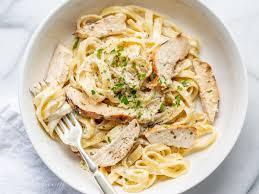

Ingredienser
- 400g tagliatelle
- 2 kycklingfiler
- 0.5 dl vetemjöl
- 1 bananschalottenlök
- 2 klyftor vitlök
- 2 msk smör
- 100g färskost
- 3dl vispgrädde
- 2 msk koncentrerad kycklingfond
- 1dl parmesanost
- salt
- peppar
Instruktioner
- Halvera kycklingfiléerna till 4 tunna filéer. Vänd i mjölet, salta och peppra.
- Finhacka schalottenlök och vitlök.
- Fräs mjukt i en stekpanna på medelhög värme tills löken blir mjuk och glansig.
- Tillsätt färskost, grädde och kycklingfond. Låt puttra ihop.
- Stek kycklingen gyllene i smör.
- Vänd ned riven parmesan i såsen. Skär kycklingen i snygga skivor.
- Blanda pastan med såsen och lägg kycklingen ovanpå vid servering. Toppa med finhackad färsk persilja.
